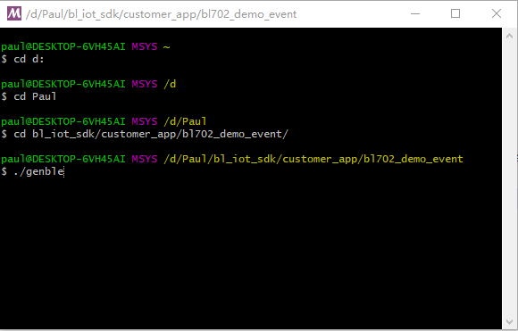
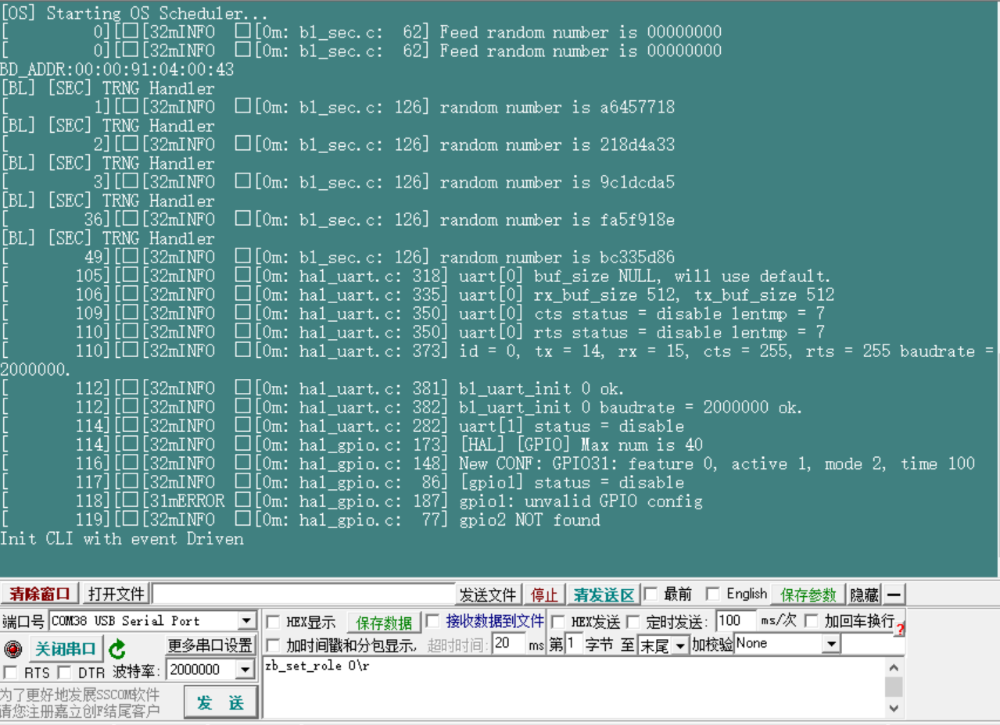
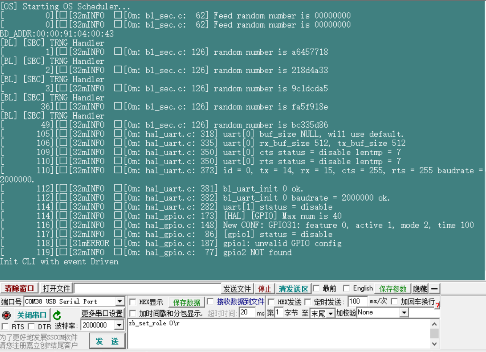

BL702 SDK Starter Guide
本文档旨在指导用户搭建 BL702硬件开发的软件环境。
编译环境的建立
打开MSYS2并安装make，输入命令：
pacman -S make后回车，并根据提示直到安装完成

设置环境变量
- 使用gcc进行编译，需要在MSYS2中将gcc添加至环境变量，方法如下：
1，（推荐）在MSYS2的启动文件 home/xxx/.bash_profile 中添加如下指令：
export PATH=/yyy/zzz/toolchain/riscv/MSYS/bin:$PATH2，（不推荐，每次MSYS2重启需要重复该操作）在MSYS2命令行中，直接输入如下指令
PATH=/yyy/zzz/toolchain/riscv/MSYS/bin:$PATH注：这里需要根据用户gcc所在实际路径替换上述yyy、zzz，例如PATH=/d/Work/Code/bl_iot_sdk/toolchain/riscv/MSYS/bin:$PATH
代码编译
进入需要编译的工程目录，命令：
cd customer_app/bl702_demo_event
可阅读
readme，选择不同的命令进行编译，例如：编译BLE 命令：./genble；编译zigbee 命令：./genzb；编译zigbee + ble 命令：./genflashmap
bin文件下载
- 可参考 BLFlashEnv 中的<下载程序>章节
bin文件运行
通过USB端口连接电脑，打开相应的串口号设置波特率为2000000，按下图标2中的Reset键复位设备；如果是用BL_PROJ板通过JTAG连接设备，设备启动时串口会提示打印信息；如果是USB直接连接设备，USB打印功能是在程序初始化完成后才开启，所以无法打印设备启动信息。等USB在PC上枚举成功后，再打开对应的串口号查看后续打印以及进行命令输入。
 
